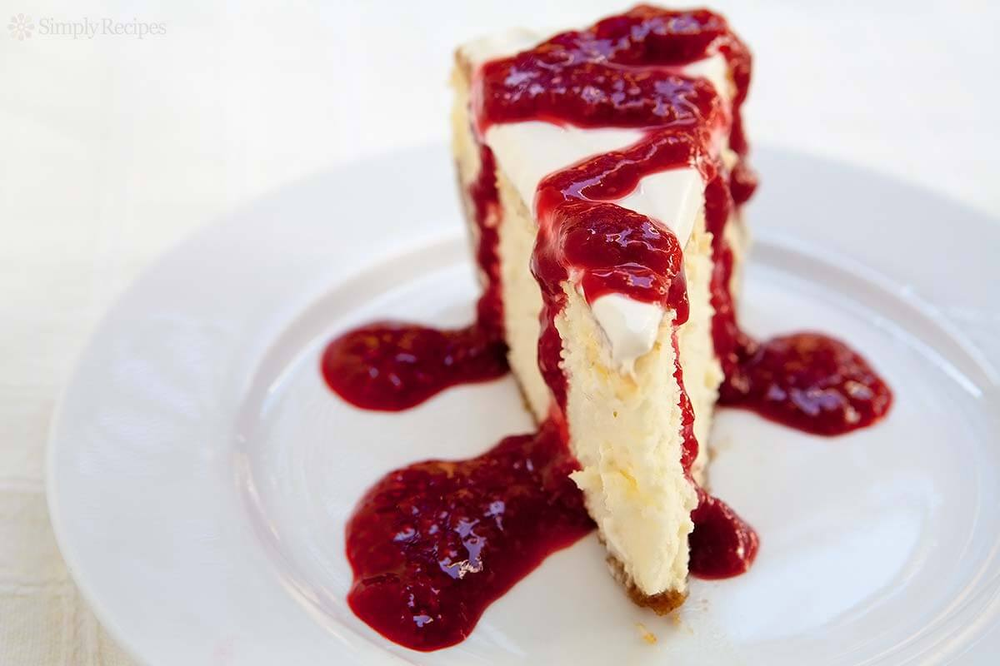

Ingredientes
- 250 g mermelada de frutilla
- 5 claras
- 1 pote queso crema
- 1/2 taza azúcar
- 1 paquete galletas maria
- 1/2 taza manteca
- 1/2 taza gelatina sin sabor
Preparacion
- 1 Triturar las galletas hasta formar un polvo, a eso agregarle la manteca derretida para formar una pasta
- 2 Esa pasta ponerle en un tortera desmoldable en todo su fondo y llevar al frezzer
- 3 Mezclar las claras a nieve con él azúcar, mientras estamos revolviendo incorporar él queso crema pero nunca dejar de revolver y en forma de lluvia incorporar la gelatina sin sabor ya hidratada
- 4 Mezclar todo por unos 3 minutos
- 5 Sacar la tortera del frezzer y unterle encima la preparación anterior y llevar al frezzer por unos 20 minutos mas
- 6 Sacar y untar la mermelada del sabor que hayas elegido y poner en él frezzer por 5 minutos mas
- 7 Desmontar y comer!
Ingredientes
|
|
Preparacion
|
|